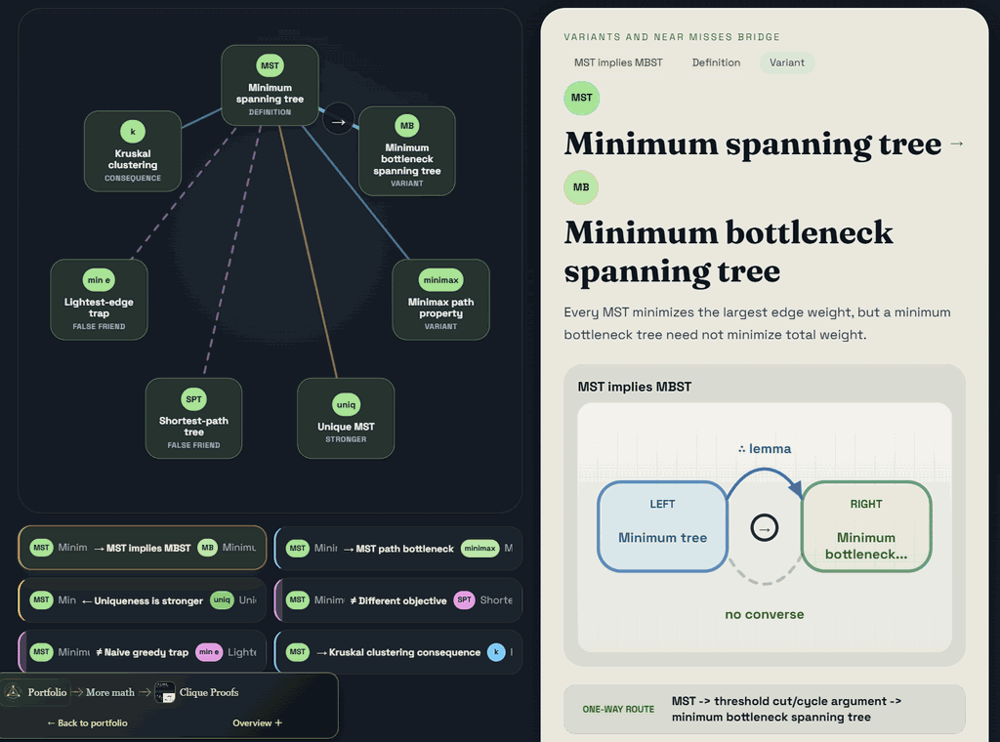
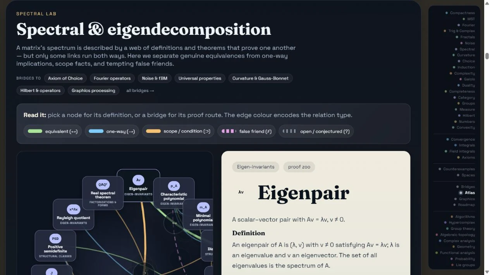

Interactive application Educational WIP
Interactive
Overview · selected highlights
Clique Proofs
A growing educational atlas of direct proof routes. Compactness, minimum spanning trees and Fourier-related clusters connect apparently different formulations of one concept; each bridge exposes assumptions and structure that a bare equivalence statement can hide.
ConnectCountProve
- ◇
Choose a viewpoint
Start from a familiar formulation in a focused concept cluster.
- ⇒
Follow a proof
Read the direct argument connecting it to another formulation.
- ↔
Compare the routes
Inspect what a different bridge reveals about the same structure.
- ∅
Test the assumptions
Use counterexamples and scope notes to locate an equivalence's limits.
Known mathematics, connected through inspectable arguments. Educational · work in progress.

